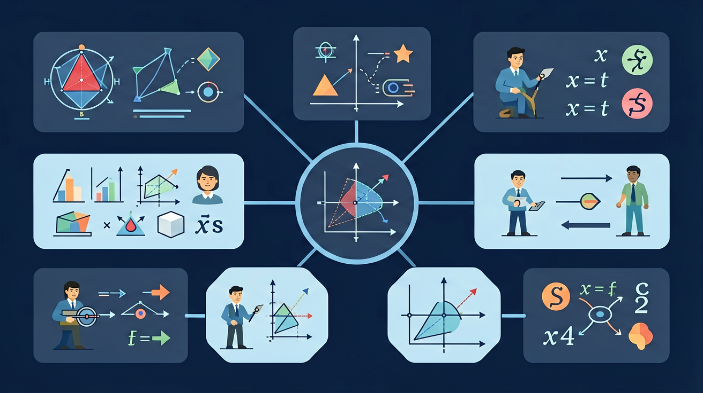

🎯 能说出频率与概率的区别与联系
🎯 能判断实验次数对频率稳定性的影响
🎯 能分析用频率估计概率的误差原因
❓ 为什么投篮命中率可以用频率来表示？
❓ 实验次数越多，频率就越接近概率吗？
❓ 用频率估计概率时，为什么有时候结果不准确？
学完这一课，这些问题你都能自信地回答。
小明投篮10次命中7次，他的命中概率是？
关于频率和概率，正确的是：
在大量重复试验中，事件发生的频率会稳定在某个常数附近，这个常数就可以作为该事件概率的估计值。频率是试验值，会波动；概率是理论值，是稳定的目标。试验次数越多，频率一般越接近概率。
先算频率作为概率估计，再用概率乘以总数估计各类个体数量。作答时说明这是估计值。
常见误区：常见误区是认为试验次数多了频率一定等于概率，或用很少的试验次数就下结论。
关于频率与概率，下列说法正确的是？
摸球试验 1000 次中有 250 次摸到红球。若袋中共 20 个球，估计红球约有？
And：学生知道抛硬币正反可能性各一半
But：实际抛10次可能出现7次正面，与理论值不符
Therefore：理解频率与概率的关系是建立统计思维的基础
概率是理论值，频率是实际试验结果。比如掷骰子出现1点的概率是1/6，但小刚实际掷60次，出现1点9次，频率=9/60=0.15。当试验次数很少时，频率可能偏离概率；但随着次数增加（如掷600次），频率会逐渐接近概率值。这就是大数定律的体现。
🌍 天气预报说降水概率30%，意味着历史上相似天气条件下，100天里有30天下雨。小明观察发现最近10天预报30%概率时，实际下了4天雨，这就是短期频率与长期概率的差异。
小美投篮命中率60%，连续投5次最可能命中几次？
And：学生知道如何计算简单事件的概率
But：现实问题（如乒乓球比赛胜率）往往没有理论概率
Therefore：掌握用频率估计概率的实用方法
当无法计算理论概率时，可以用大量试验的频率来估计。例如：工厂检测灯泡寿命，随机抽100只，3只不合格，则不合格概率≈3/100=3%。注意：①试验次数要足够多（如至少50次）；②每次试验条件相同。数学课上同学们分组抛硬币，全班汇总2000次数据后，发现正面频率为0.498，非常接近理论概率0.5。
🌍 手机天气预报的准确率是通过统计历史数据得出的。比如统计1000次降水预报，实际下雨750次，那么准确率就是75%，这个频率就成为下次预报的概率依据。
要估计池塘鱼的总数，捞起200条做标记后放回，第二次捞出100条中有10条有标记，最可能总数是？
开放任务：用三步写出你如何向同学讲清「用频率估计概率」。
将大样本拆解为多个小样本组，观察频率波动规律
频率是实际发生次数与总次数的比值，概率是理论预期值
对比10次vs1000次实验的频率折线图，发现稳定性差异
动态模拟抛硬币实验，可视化频率向0.5收敛的过程
用班级生日数据模拟，理解频率估计概率的实际应用
以下关于频率和概率的说法，正确的是：
设计一个实验，统计不同同学的投篮命中频率，并估计他们的投篮命中概率。
💡 增加试验次数，看频率趋稳。
外链：https://phet.colorado.edu/sims/html/plinko-probability/latest/plinko-probability_zh_CN.html
先独立作答，再点选项查看对错与错因。
小明投篮100次，命中30次，他的投篮命中频率是多少？
小红投篮200次，命中60次，她的投篮命中频率是多少？
如果小明的投篮命中频率是0.25，他投篮400次，预计命中多少次？
小华投篮50次，命中20次，她的投篮命中频率是____。
答案：0.4
频率等于命中次数除以总投篮次数，即20/50=0.4。
如果小丽的投篮命中频率是0.2，她投篮300次，预计命中____次。
答案：60
预计命中次数等于频率乘以总投篮次数，即0.2*300=60。
✅ 频率是实验结果，概率是理论值，两者接近但不相等
💡 混淆了经验频率与理论概率的概念
✅ 强调'大数定律'，展示不同实验次数下的频率波动对比图
💡 缺乏对数据规模的敏感性
口诀：实验次数不够多，频率就像小猴跳；次数足够多，稳稳接近概率值
类比：就像测体温，单次测量可能不准，多次测量取平均更接近真实体温
（中考题）质检员抽检100件产品，发现5件次品，这批产品的次品概率估计值为？
若重复抛硬币实验，哪个表述正确？
（迁移题）公园里30%的银杏树生病，小明随机观察100棵，预测可能生病的数量范围是？
点击节点跳转到对应章节；可切换布局。